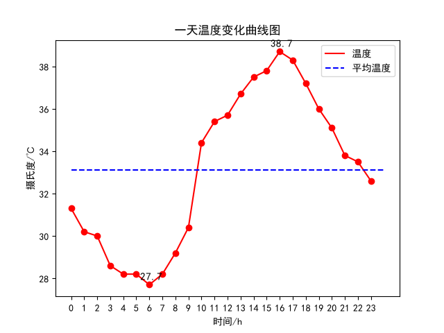
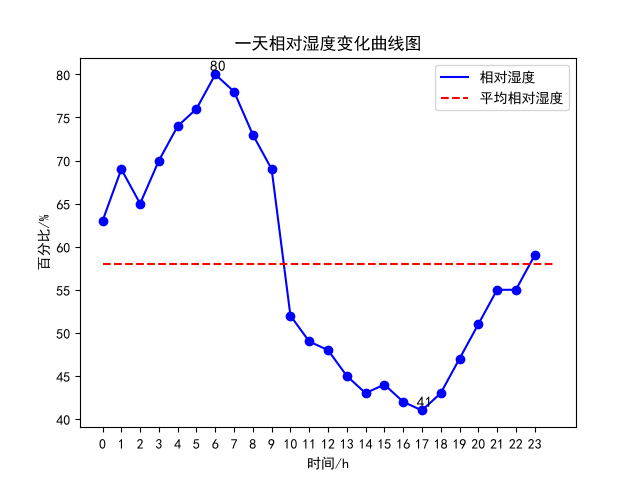
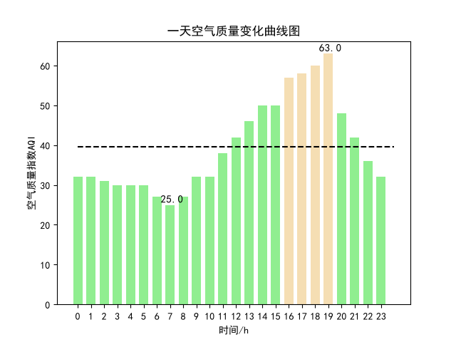
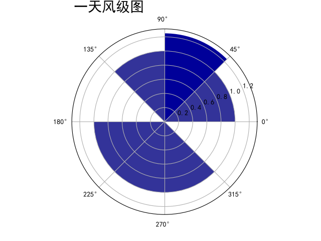
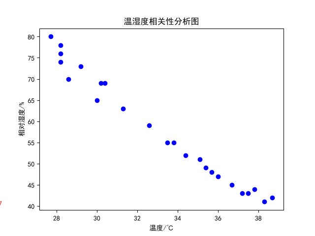
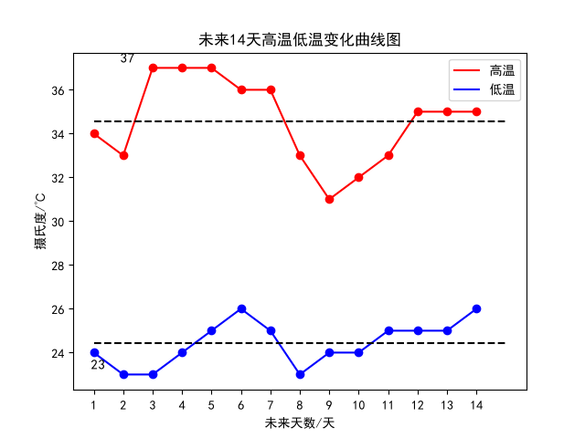
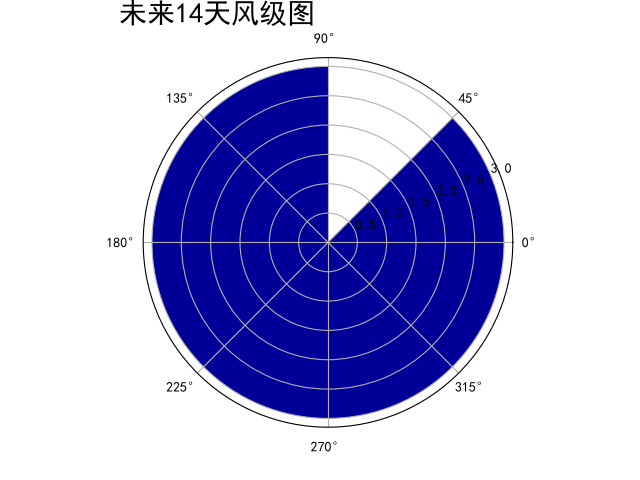
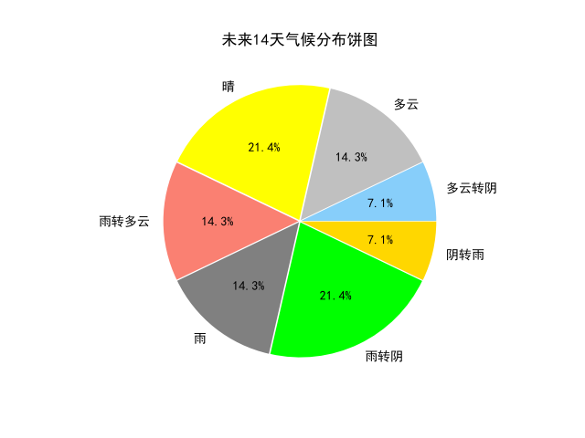

生成时间: 2026-07-16 10:20:03
| 指标 | 均值 | 最大 | 最小 |
|---|---|---|---|
| 温度 | 33.1 | 38.7 | 27.7 |
| 相对湿度 | 58.0 | 80 | 41 |
| 空气质量 | 39.9 | 63.0 | 25.0 |
| 指标 | 均值 | 最大 | 最小 |
|---|---|---|---|
| 最高气温 | 34.6 | 37 | 31 |
| 最低气温 | 24.4 | 26 | 23 |
| 风级 | 3.0 | 3 | 3 |
| 天气 | 天数 |
|---|---|
| 晴 | 3 |
| 雨转阴 | 3 |
| 多云 | 2 |
| 雨转多云 | 2 |
| 雨 | 2 |
| 多云转阴 | 1 |
| 阴转雨 | 1 |







